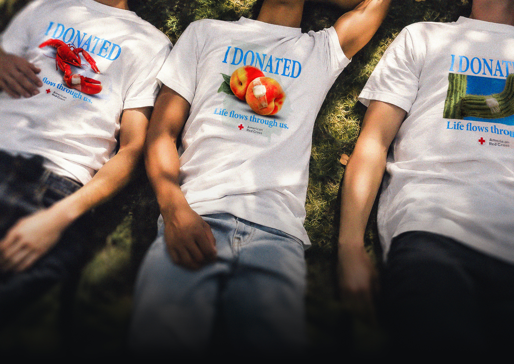
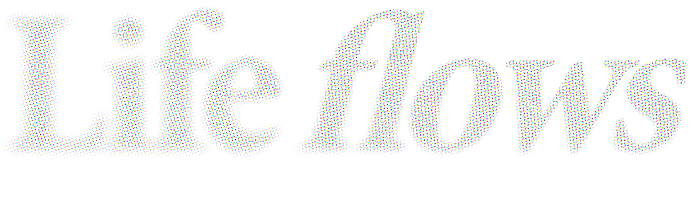
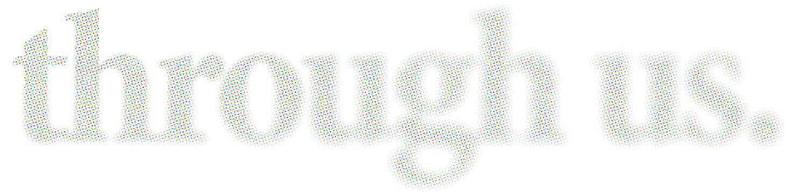
About
An unofficial campaign concept for the American Red Cross. Pairing with an existing clothing brand / artist, they would offer state-exclusive, limited edition tee shirts only obtainable by donating blood. They are numbered to the donor, with a tag that shows they gave blood.
Objective
Win over young people who have never donated blood. Make getting a shirt from a respected brand feel like a no-brainer.
Details
- Photoshop
- InDesign
- Figma
- Claude Code
The Brief
The Red Cross is warning of a national blood shortage. 2026 Summer donations marked their lowest point in four years, and young donor % has been declining since the pandemic. Yet Gen Z still shows up for causes, making up 42% of new Red Cross volunteers.
And streetwear has moved them to donate before. In 2022, ‘Drop for Drop’ partnered with NYC brand MONO, which resulted in 84% first-time donors by offering branded shirts for a pint of blood. The results are promising, but I felt the designs missed the mark 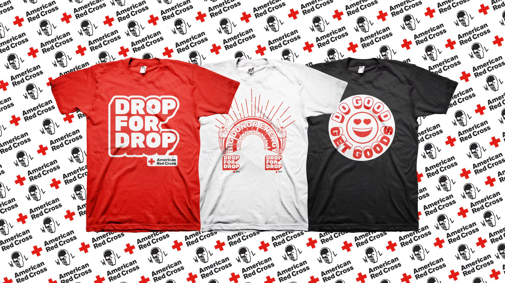
To back that assumption, I showed 20 people aged 18 to 24 the Drop for Drop pieces and asked whether they’d feel compelled to donate. Three said yes. Then I showed them this concept without saying it was mine, and fifteen said yes.
4 yrs
Summer donations at their lowest in four years.
42%
of new Red Cross volunteers are Gen Z.
84%
of Drop for Drop donors were giving for the first time.
Sources: KBIA (Aug 2026), News3LV. Drop for Drop figures: MONO, agency-reported.
Young donors won’t wear a PSA. They’ll wear a joke they’re in on.
A “pov: you donated blood to get the shirt” TikTok passed a million views. A bandaged peach says “I donated” without a word.
The joke still has to carry proof. Nearly 70% of Gen Z donors say they’re more likely to give when they know who they’re helping, and how.
Sources: [TikTok views] · [Gen Z donor survey]
The Idea
A donor-only tee for every state. The front reads I DONATED over a bandaged icon only that state would claim: a peach, a lobster, a saguaro. The back reads GEORGIA BLEEDS, or yours. You can’t buy one. You can only give for one.
Each shirt is numbered to its donor, so it works as proof, not merch. Give again and the series grows. And every state drops with a local partner, a designer, a team or a musician, who brings their own crowd.
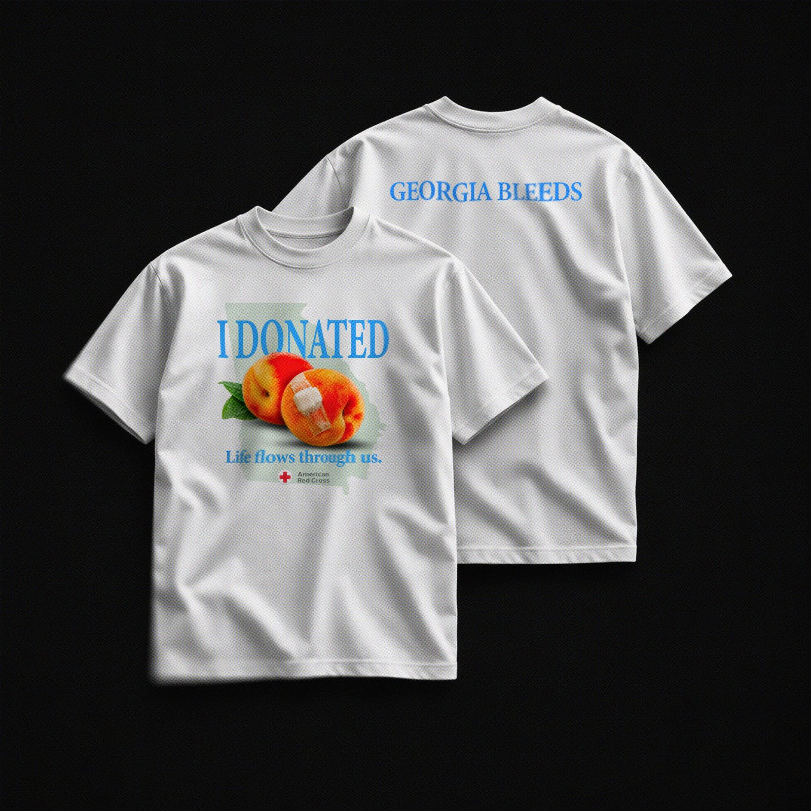
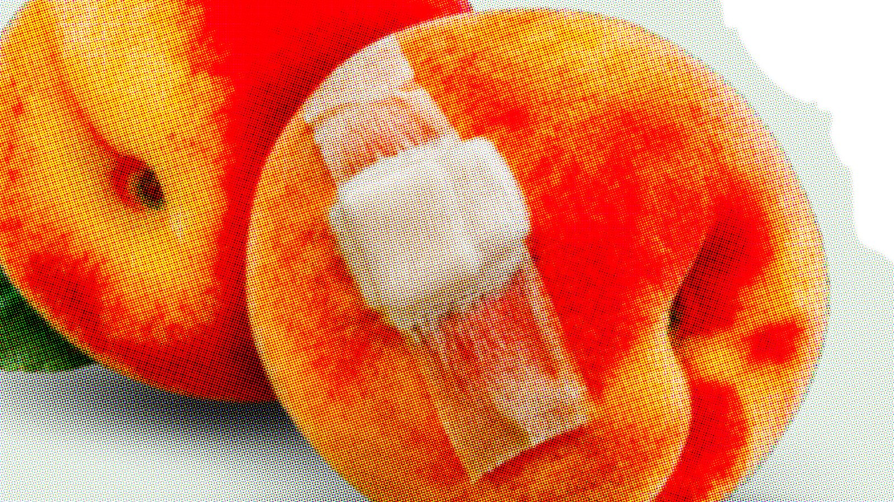
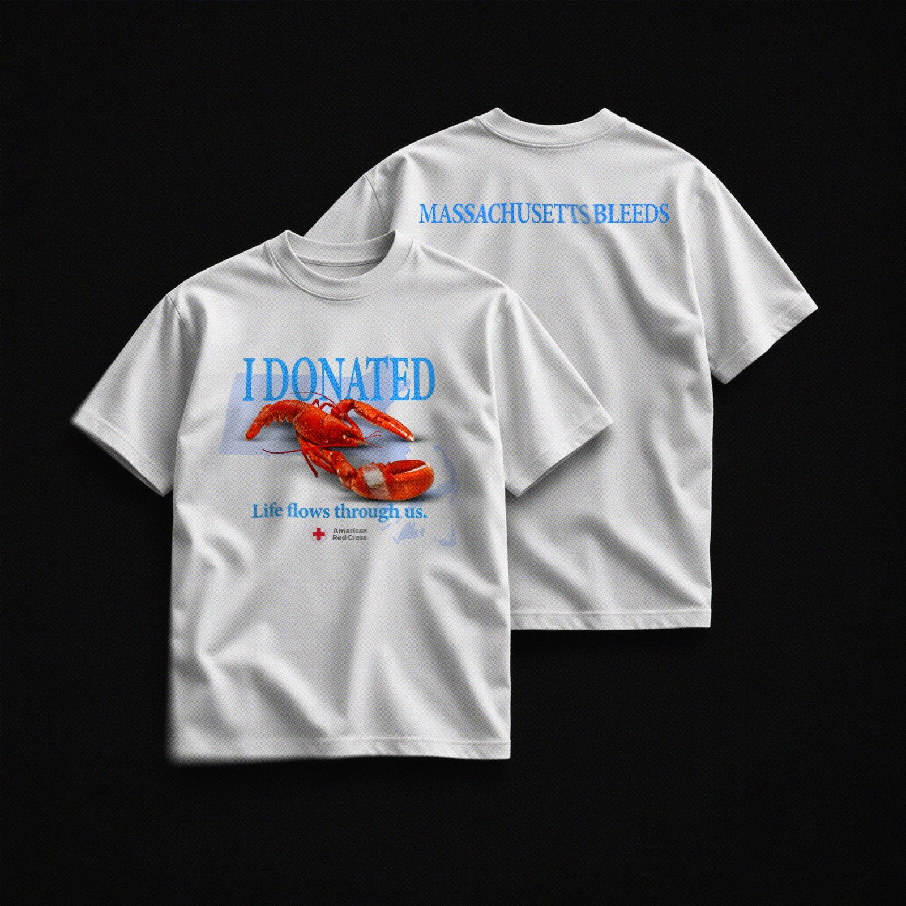
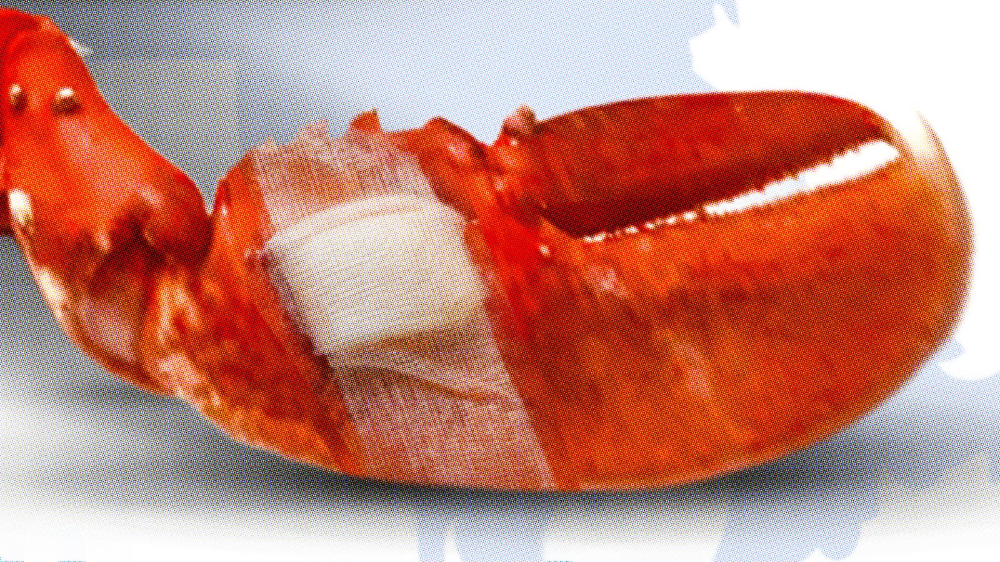
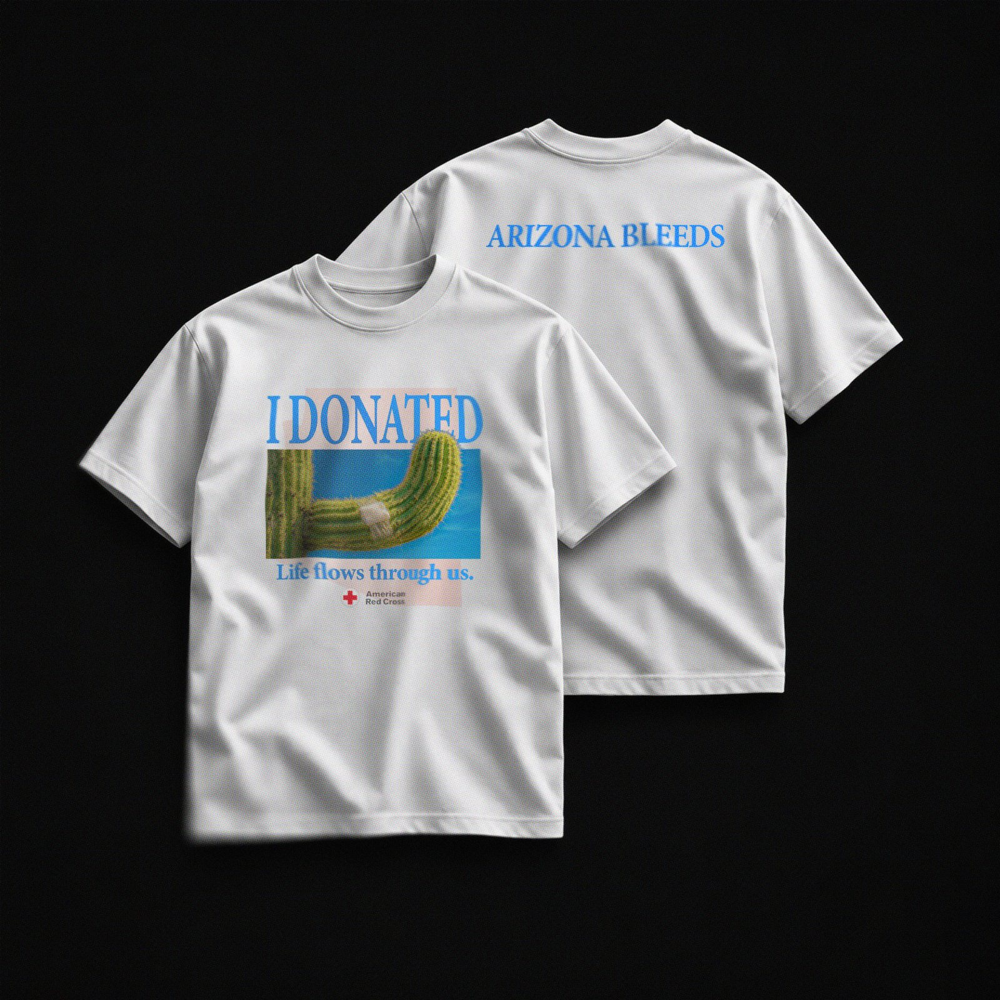
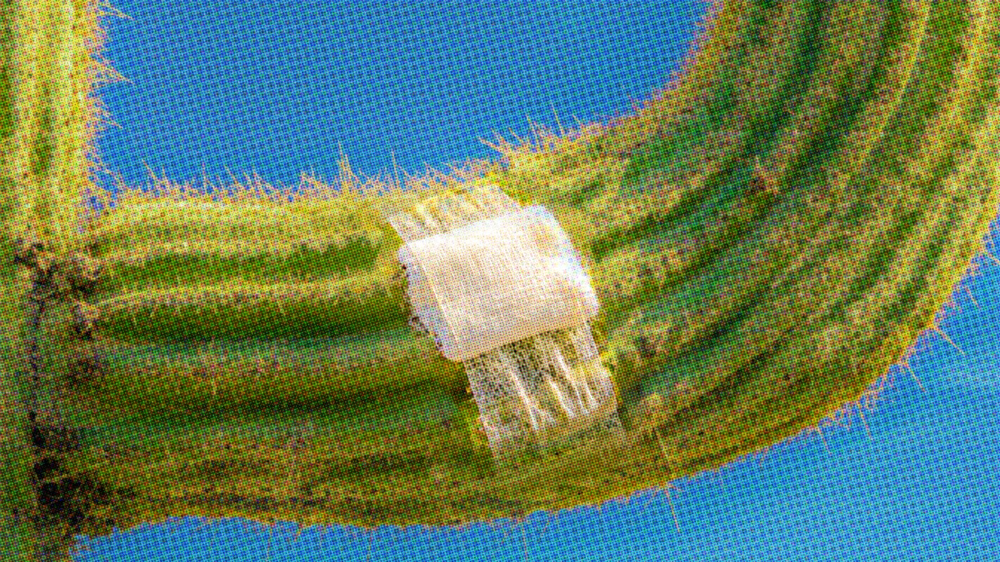
The bandage is the logo. Real gauze and tape at a joint, the same in every state, never retouched away.
01
The white state tee
Your first pint.
02
The black colorway
Your second.
03
The regular’s patch
Your third.
Each unlock lands when a donor can give again, about every eight weeks.
The Proof
The hang tag is priced in blood: retail $0, cost one pint, and the number on it is yours. The yellow PAID sticker is the joke. Donors aren’t paid, and the shirt isn’t currency.
The tag comes off. The neck label doesn’t. Printed inside with the donor number and size, it keeps the proof on the shirt for good: numbered, dated and non-transferable.
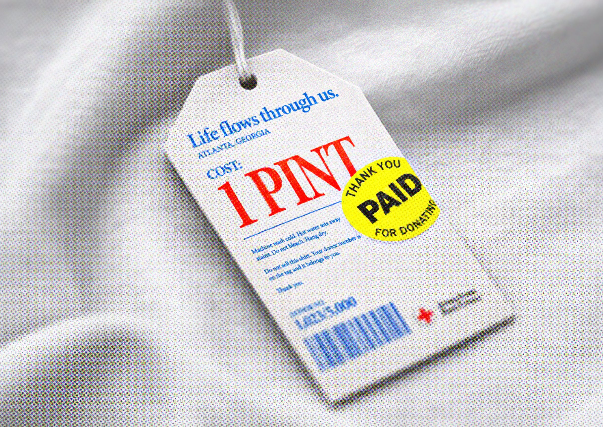
Inside the neck
Macro of the printed neck label: donor number and size over the Georgia outline. Collar folded open, soft window light.
Georgia, back
The tee on a hanger against a cobalt wall, GEORGIA BLEEDS across the shoulders. Straight on, centered.
Campaign Assets
Each state gets a 48-hour drop: 5,000 tees for 5,000 pints. The feed runs like a sneaker release, from the countdown to the line to a live scoreboard, then the unlock for donors who come back.
Out in the world, the shirt is the poster, with barely a word added: the state, the price, the place. They go up where young donors already are: gym hallways, campus boards, booster tables.
Story: teaser
Black screen, a countdown in the print blue: 48:00:00. One line under it: Georgia drops in 48 hours.
Story: drop day
The Georgia tee on cobalt, the real tag in frame. On image: GEORGIA · 48 HOURS / 5,000 TEES · 5,000 PINTS.
Story: scoreboard
A live tally on black: 1,204 / 5,000 pints. Sample numbers.
Caption: Georgia drops in 48 hours. 5,000 tees. 5,000 pints. Cost: 1 pint. #LifeFlowsThroughUs
Bus shelter, at night
The Georgia poster backlit in a bus shelter: the bandaged peach, Cost: 1 pint, the drive location. Cool street light, wet pavement, nobody in frame.
The spot. One volunteer, from an empty feed to a wall of names.30 seconds · vertical · no voiceover
0–5 s
“Georgia drops in 48 hours.”
A phone counts down.
5–12 s
“No restock.”
The line wraps around the building.
The spot, 0:30
Vertical, for Instagram and TikTok. Export a 9:16 still for the poster frame.
12–22 s
“Cost: 1 pint.”
Sleeve up. The gauze, then the tag.
22–30 s
“Life flows through us.”
A donor holds the shirt up. End card: [Drive link].
Rollout
Week one, the posters and countdown go up. Week two, the 48-hour drop at real drives. Week three, donor posts and reposts. Around week ten, when donors can give again, the second pint unlocks.
The pilot runs three shirts at the same drive: a plain Red Cross tee, a designer-led state tee and a partner collab. Whichever brings the most donors back within 90 days picks the design.
Week 1
Teaser: posters and the countdown.
Week 2
The drop: tees at real drives.
Week 3
Content: donor posts and reposts.
Week 10
Repeat unlock: pint two opens.
The number that matters
90-day repeat rate
Also tracked: first-time share, appointments against baseline, and content volume.
To beat
Snoopy: appointments up 40% in week one, and 75% of donors under 34. [Source]
Drop for Drop: 84% first-time donors, agency-reported.
The risk
FDA guidance weighs whether a donor could easily resell an incentive, and a hyped shirt will get resold. A numbered, dated, non-transferable tag keeps it proof, not currency.
- What I learned
- The best idea in the category already existed. The open problem is the second donation.
- What I’d test next
- Whether a collection brings donors back, not just a drop.
- What I’d change
- Run the three-shirt pilot first and let it choose the design.
Want to see the rest of the work?
- [Email]
- [LinkedIn]
- mbogfx.org